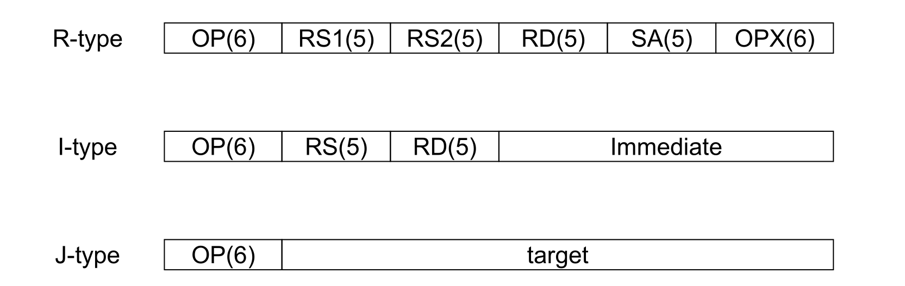
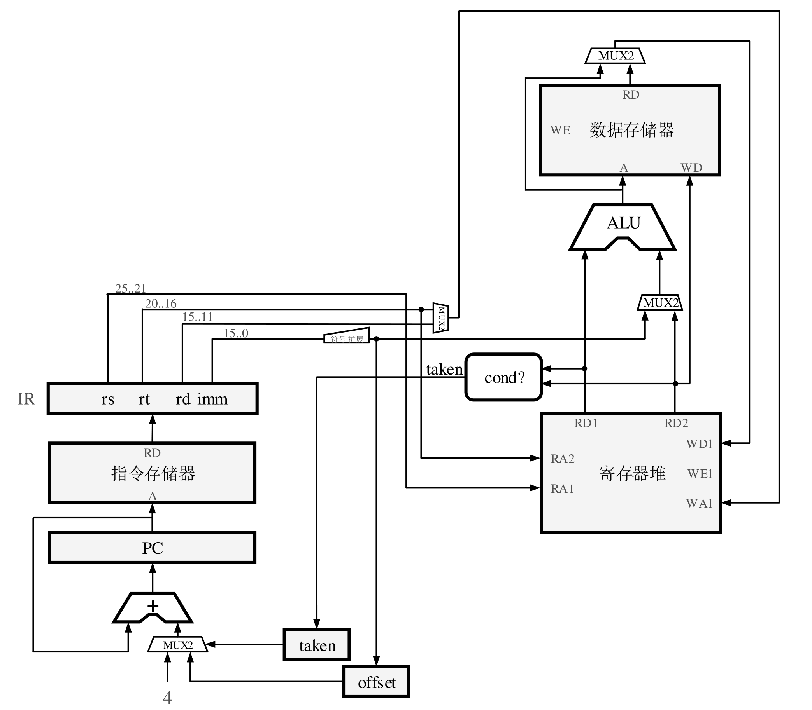
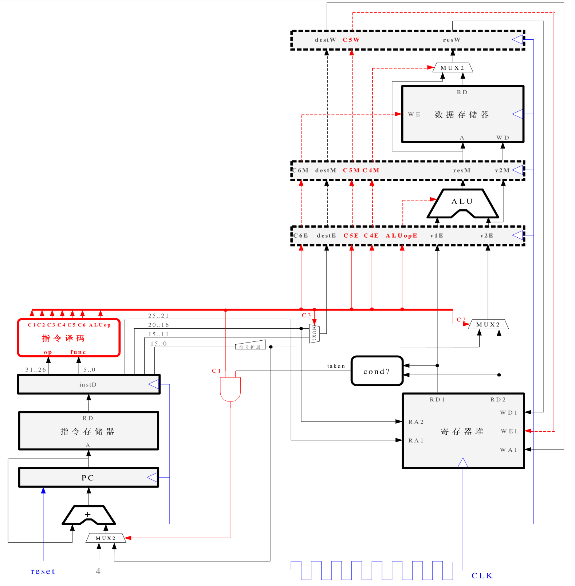
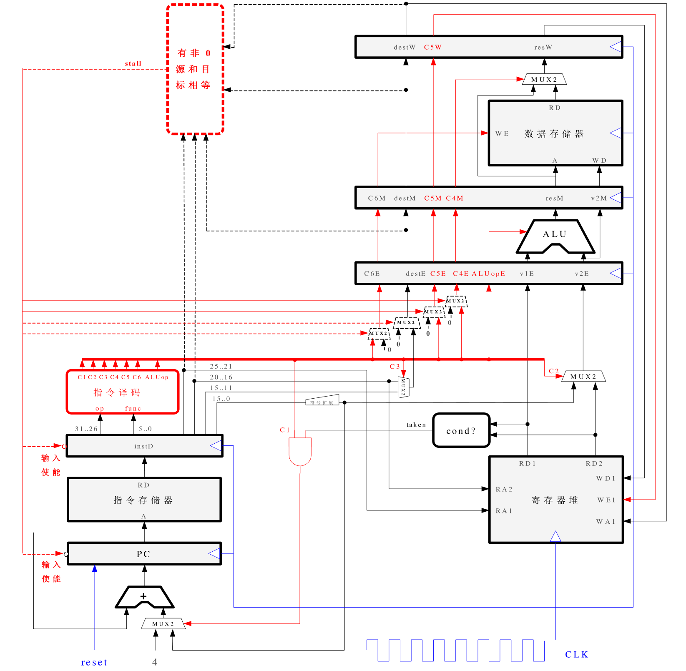
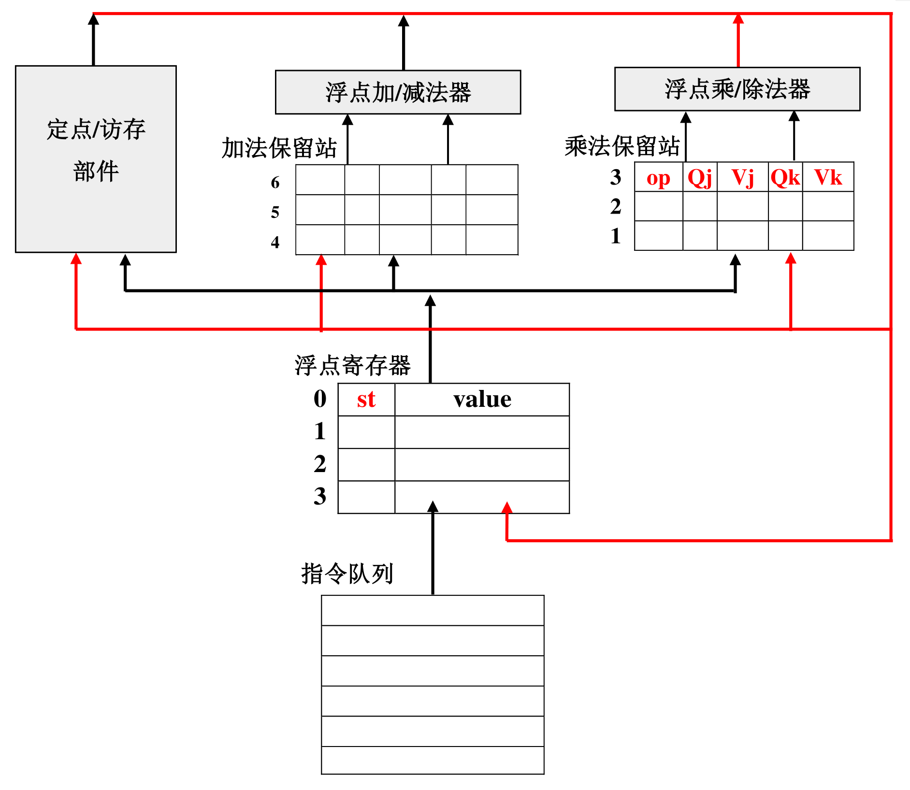
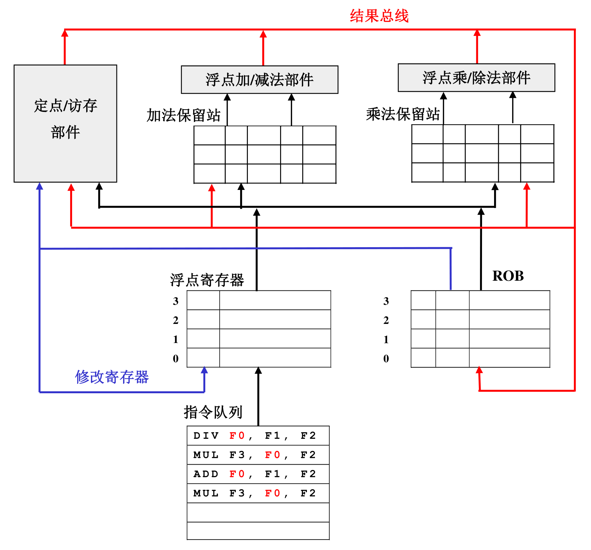
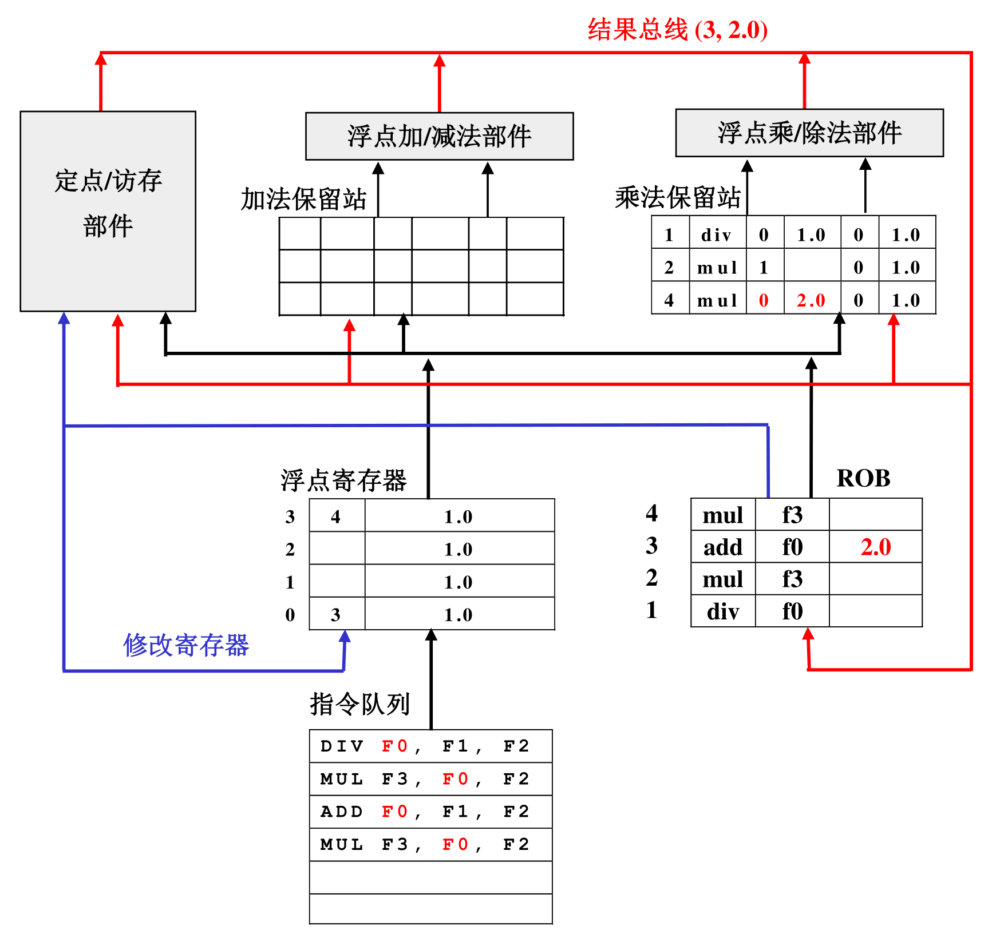
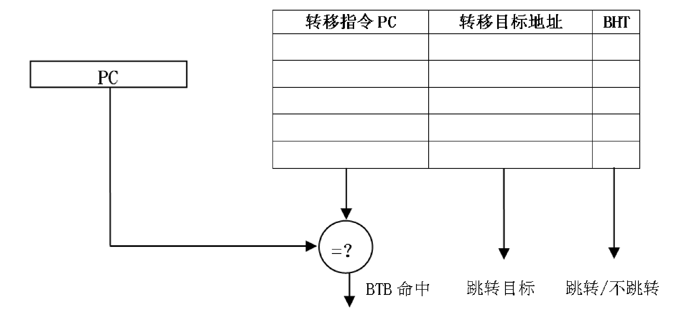
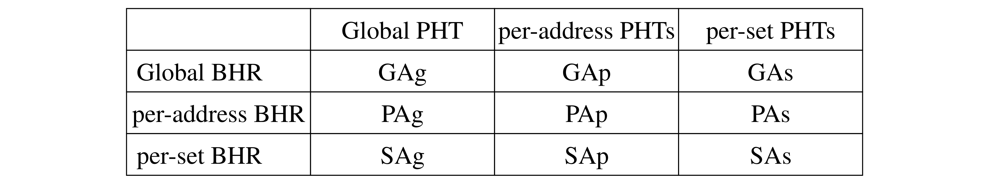
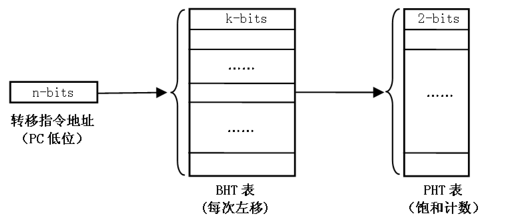

我们说CPU适合复杂的逻辑控制任务，而GPU适合大量的计算任务，这是由它们的硬件架构决定的。这一节简单介绍一下CPU的基本架构，了解一下CPU为何能快速的执行拥有复杂逻辑的程序。
§静态流水线
以MIPS为例，指令分为三种：寄存器类(R-type)、立即数类(I-type)和转移类(J-type)。它们的格式大概为：

其中OP是操作码，RS为源操作数寄存器号，RD为目标操作数寄存器号，SA用于扩充指令集，OPX是辅助操作码，Immediate是立即数，target是跳转目标。比如ADDU和SUBU的操作码都是000000，而OPX分别为100001和100010。
MIPS中，访存指令(LW/SW)属于I-type，由RS给出基址，Immediate给出偏移，RD给出要将数读到哪个寄存器或者要将哪个寄存器的数保存到内存。除LW和SW两条指令外，MIPS其它指令都不能直接操作内存(x86可以以内存地址为操作数进行算术运算等)。下图展示了一条指令在CPU中的数据通路：

为提高CPU执行指令的速度，可以将指令的执行过程细分，典型的分法是分为5级流水：取指(IF)，译码(ID)、执行(EX)、访存(MEM)和写回(WB)。在同一个周期内，可以有5条指令分别处于流水线的不同阶段，这样就有5条指令在同时执行。但是线路中的电信号只能表示一个状态，所以每条指令进入流水线的下一阶段时必须带上自己的状态，这点可以由下图体现：

流水组各阶段都设有锁存器，两个阶段间设有使能端，当全局时钟信号到来，锁存器向下一阶段输出信号，并保存上一阶段过来的信号。
最理想的情况下，流水线中有5条指令在同时执行，但这不总是能办到的，某些相邻的指令间存在相关性，必须以严格的顺序推进，此时需要将相关指令的后一条阻塞住，直到前一条指令执行完成：

相关性可以分为三类：数据相关、控制相关和结构相关。数据相关是指两条指令访问同一个寄存器而且其中至少一条是写寄存器(读后读不构成相关)，控制相关是一条指令是否执行取决于转移指令的执行结果，结构相关是指两条指令使用同一个功能部件(如两条加法指令都使用加法器)。
上图的数据通路只能解决数据相关。取寄存器的值发生在译码阶段，因此在译码的输出电路中指定一个使能端，如果检测到正在译码的指令和正在执行的指令访问同一个寄存器且其中至少有一条是写寄存器的指令，就将使能端置0，将正在译码的指令阻塞在译码阶段。同时正在译码的指令后面的指令也不能执行，所以在取指的部件以及译码的输入都必须阻塞。
§动态流水线
数据相关可以进一步细分真相关和名字相关。真相关是写后读，它的本质是后面的指令需要前面的指令的计算结果，而不只是需要操作同一个寄存器，这种相关没有直接的解决办法。名字相关有读后写和写后写，这两种只是需要操作同一个寄存器，对彼此的数据没有需求，可以通过寄存重命名来解决。
在静态流水线中，如果两条指令存在相关，后一条指令必须等待前一条指令执行完成，将结果写回寄存器，然后后一指令才能完成译码，而且这条指令会把所有后续指令全部阻塞在流水线外，实际上这是不必要的，相关指令后面的指令不一定与它们相关，因此是可以执行的，这就是动态流水线的基本思想。
动态流水线的基本思想是前面指令的阻塞不影响后面指令的执行。具体做法是将译码分成两个阶段：译码和读操作数。在译码阶段，对指令进行译码并检查相关性，在读操作数阶段，检查指令的操作数是否准备好，准备好就读操作数并送去执行，否则保存到保留站中进行等待。动态流水线基本算法是Tomasulo算法，其结构可由下图描述：

在Tomasulo算法中，寄存器需要增加一个结果状态域，用于表示值是否有效，如果为空则表示寄存器值可用，否则保存产生寄存器结果的保留站号。指令的结果总线不仅需要将值写回寄存器，还要送回产生该值的保留站号。保留站中一条指令分为5个域：op表示操作码，Vj和Vk表示源操作数的值，Qj和Qk表示没有准备好的源操作数保留站号。
Tomasulo算法的过程为：1、发射。把指令队列的指令根据操作类型送到相应保留站，发射过程中读取寄存器的值和状态域，如果寄存器的状态域为空则读取寄存器的值，如果寄存器的状态域为保留站号则将保留站号写入Qj或者Qk，如果指令需要写寄存器则将相应寄存器的状态置为本指令的保留站号。2、执行。如果指令所需的操作数都准备好就送去执行，否则在保留站内等待操作数的产生。当保留站中等待的指令侦测到结果上线的保留站号与自己等待的保留站号相同时，则表明自己等待的操作已经产生，将结果线上的指令结果写入保留站相应的域，如果所有操作数都已经准备好则将此条指令送去执行。3、写回。指令执行完成后将结果和自己的保留站号写到结果总线上，然后释放保留站。写入寄存器时检测结果线上的保留站号，如果和目标寄存器状态域的保留站号不相同则不能写，比如有两条指令先后写同一个寄存器则只能是后一条成功。
上图中的保留站是独立的，每个功能部件都有一个保留站，还有分组保留站和全局保留站两种设置方法。顾名思义，分组保留站就是几个功能部件共享一个保留站，整个CPU设置多个保留站；全局保留站就是整个CPU只设置一个保留站。全局保留站拥有最高的效率，而独立保留站可能出现负载不平衡的情况，极端情况下，某个保留站已满而导致流水线阻塞，但其它保留站还很空闲甚至没有指令。但是全局保留站的电路设计难度非常高，只有顶级的CPU设计公司才能设计出来，其它公司都只能采取次优方案，即分组保留站。
§重排序缓存
保留站将指令的执行顺序变成乱序，如果有某条指令发生例外(exception)，处理完例外后需要恢复现场，接着发生例外的地方继续执行指令，因此发生例外的指令后面的所有指令的结果都需要被取消，但这点在上面的Tomasolu算法中是做不到的，因为后面的指令的执行结果已经写回了寄存器，无法再恢复之前的值，现代CPU解决这个问题的办法是使用重排序缓存(Reorder Buffer, ROB)。
重排序缓存的基本思想是指令执行的结果不直接提交到寄存器，而是提交到重排序缓存，然后按指令原本的顺序提交到寄存器。如下图所示：

指令按本身的顺序进入ROB，某条指令提交结果前必须等待它前面的指令提交结果后才能提交，比如下图中的ADD指令不能提交结果到寄存器，必须等待它前面两条指令提交后才能提交。

§转移猜测(分支预测)
引起程序执行流程转移的原因有：循环、分支、函数返回等。函数返回时从栈顶弹出返回地址，且必然跳转，预测比较简单；但循环语句和分支语句生成的指令一般为跳转指令(bne、blez等)，它可能更改程序计数器的值，也可能不更改，因此下一条指令的地址就不确定了。现代CPU解决这个问题的办法是使用转移猜测功能，就是在不计算跳转指令的前提下根据转移的历史来预测本次转移的方向。
基本的转移猜测结构主要是根据单条转移指令的转移历史来预测该指令未来的跳转方向，这种转移预测方法对于重复性特征明显的转移指令可以产生良好的效果，比如对于循环1000次的循环语句，前999次跳转方向都完全相同，只有第1000次跳转不成功。因此，可以将每条转移指令的历史记录在转移历史表(Branch History Table, BHT)中，每次根据BHT表的内容来判断转移方向。由于使整个PC做索引会导致表太大，因此不般使用PC的低位做索引，一般来讲，取PC的低12位索引4096项BHT冲突的概率就不大了，而且即使冲突导致猜错也可以通过重排序缓存纠正。
下图是一个2位BHT的工作过程，它对每条指令使用2位饱和计算记录其转移历史，转移成功(taken)就将饱和计数加1，直到它为11，不成功(not taken)就减1，直到它为00，猜测时如果高位为1则跳转，高位为0则不跳转。注意这儿的转移是否成功是实际结果不是预测结果。实践证明，2位饱和计数已经足够，大于2位的饱和计数对预测效果的提升不大。这种使用有限位来记录过去有限几次转移历史的结构也称为转移模式历史表(Pattern History Table, PHT)。

上面的BHT只能预测转移指令的跳转方向，不能预测转移指令的跳转目标，而间接转移指令的跳转目标不能直接从指令中获得，因此需要一种机制可以对间接转移指令的跳转目标进行预测。另外，PHT表只能在译码阶段使用，在取指阶段使用会将普通指令也当作转移指令干扰预测结果。引入转移目标缓冲器(Branch Target Buffer, BTB)可以解决这两个问题，它的结构如下图所示。

BTB使用相联存储器(Content Addressed Memory)来保存转移指令的PC，这样就可以在取指阶段直接判断出指令是否为跳转指令然后根据转移历史预测转移目标。
转移指令之前可能也有相关性，比如
|
|
因此转移猜测时不能只看指令本身的历史，还应该看程序中所有转移指令过去m次的转移记录。通常使用转移历史寄存器(Branch History Register, BHR)记录程序中所有转移指令的历史。BHR是一个移位寄存器，每执行一次转移指令就将它左移1位，移位时高位丢掉，如果转移成功则低位补1，不成功则补0。
将BHR和PHT结合在一起可以得到两级自适应预测器。BHR和PHT都有三种设计方法：使用PC索引(per address, PA)、所有指令共用一个(global address, GA)、使用PC低位索引(set address, SA)。将BHR和PHT组合可以得到以下9种猜测方式：

以GAs为例，其结构如下图所示：

以PC低n位为索引在BHT中找到相应的项，然后以此项为索引找到PHT表中相应的项，然后依据此项的高位决定是否跳转，根据实际转移是否成功来修改饱和计数和BHT表项低位填入值。其它组合方式类似。
此外，现代CPU还有将多种转移方法结合的混合预测器，近来还发展出了将神经网络引入转移猜测的研究。就效果来看，现代CPU的转移猜测正确率可达95%以上！
§总结
CPU使用动态流水线、多发射、乱序执行以及分支猜测等方法来提升执行指令时的吞吐量，尽量减少CPU各个部件的空闲时间，这就是我们说CPU适合控制逻辑复杂的程序的原因。
§阅读材料
[1] 计算机体系结构(第2版)，胡伟武等。
[2] 计算机体系结构-量化研究方法。
注意：本文部分或者全部图片来自《计算机体系结构 胡伟武等》。